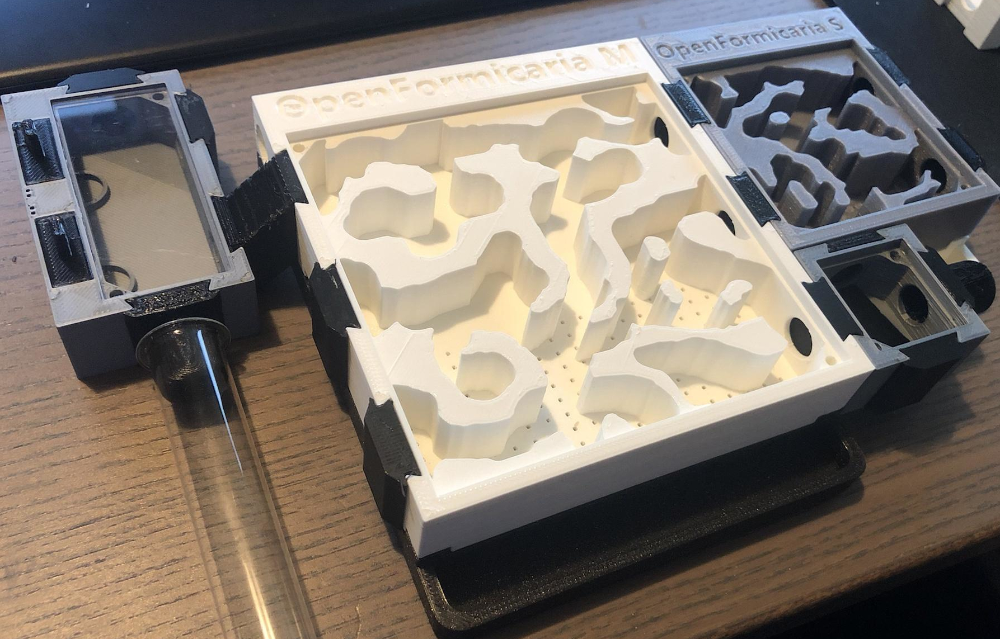

Welcome to OpenFormicaria
This is a open source modular ant formicarium and home with simple space saving connectors.
Features overview
OpenFormicaria is a set of parts that interconnect expand upon another. Any part is compatible with any other part ranging from the small Portal where you can found your colony after the test tube up to interconnecting many formicaria.
All modules are based on a 35mmx35mm base grid for ability to interconnect all of them (At least connector facing parts). 4xGateway is 35x35mm, 6xGateway is 35x70mm. All of the modules are 20mm high.
- A variety of connectors to connect modules, formicaria, tubes etc.
- Connectors can be exchanged safely while the part is in use to prevent ant escapees.
- Different sizes of formicaria for different colony sizes
- Different formicaria insert styles for different ant races
- Easy way to create your own custom insert!
- Portal module with feeding access for a first small outworld to explore and expand
- 4x or 6x Gateway modules to expand the farm

Reading On
Check out what kind of parts OF has available.
Do you want to go ahead and print your ant nest or a starting base? Continue reading with Getting Started.
If you want to contribute, add more parts and modules or want to improve existing ones, please have a look at How to contribute